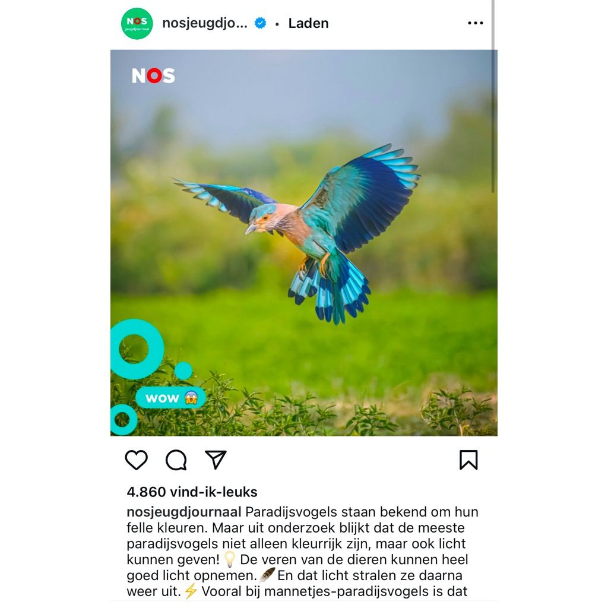

Indische scharrelaar, geen paradijsvogel
13 februari 2025 · NOS Jeugdjournaal
- Op de foto
- Indische scharrelaar
- Het ging over
- Paradijsvogel

Hoi @nosjeugdjournaal! Leuk dat jullie eens iets over vogels posten :) Volgende keer wel daadwerkelijk een foto plaatsen van een Paradijsvogel. Die zijn namelijk (meestal) nóg veel mooier dan deze Indische Scharrelaar!